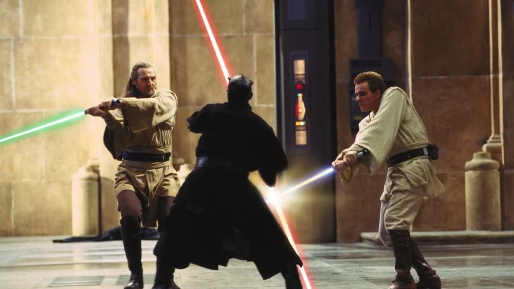

-
25 years later, 'Star Wars: Episode I — The Phantom Menace' is still bad. Stop trying to reclaim it
by Mitchel Green - May 9, 2024
|
mitchelgreen34@gmail.com

source: The Movie Database
I understand the urge to reclaim George Lucas’s much-maligned Star Wars prequel trilogy. At a time when big-budget Hollywood productions are lacking in ideas, ambition, and even technical competence in many cases, Lucas’s once disappointing follow-ups to his beloved blockbuster franchise now seem like agonizing reminders of what we once had. That it is an independent film, despite its astronomical budget, is an even greater reminder that freedom is the greatest tool a filmmaker can have to make lasting, memorable art. Even I can’t resist the wonders of the third installment, “Revenge of the Sith.” But let’s be real for a moment. “The Phantom Menace” is still terrible.
There’s a growing contingent within my generation — that is, people who were children when the Star Wars prequels were released — who have steadily pushed to reclaim Lucas’s films as not just some of the best Star Wars movies, but great movies in general. Due to a combination of misguided nostalgia, Disney’s by-committee fumbling and oversaturation of the property over the past decade, and the lasting power of some hilarious online memes, the Star Wars prequels are defining cinematic events for my generation just as the originals were for previous generations.
Most of the reasons audiences and critics disliked “The Phantom Menace” when it came out are not why the movie still doesn’t work. It’s much less a problem of what Lucas is doing (or, rather, trying to do) than how ineffective he is at it. The plot’s relatively complex political motivations are actually a welcome change from mostly thoughtless blockbuster spectacles content to dazzle with frenetic pacing and dense (in both meanings of the word) storytelling. “The Phantom Menace”’s slower, more meditative pacing allows more time for Lucas’s world-building to register and allows the action set pieces to pop by contrast.
At the same time, Lucas’s directorial classicism doesn’t have the same ambitions as his innovative tech. It looks like it was made by a filmmaker who hadn’t made a movie in over 20 years because it is. He’s trying to shoot it like he’s shooting Star Wars. It may have worked if he wasn’t trying to do something that felt so dramatically different from what came before. But staying formally glued to the past makes everything new and innovative seem out of place. The major set pieces remain thrilling, as I’m sure they were back in 1999, but that’s a shockingly small part of the film. The movie’s first half is so incredibly dull and, as good as the final three-thread climactic battle sequence may be, you’re already completely checked out by then. You don’t care about what’s happening, and the emotional stakes in those final moments are sorely missed.
His writing is even worse — a running theme in his filmography — with mostly bland, archetypal characters flatly delivering stilted, over-explanatory dialogue. There’s a reason Lucas didn’t write the best film in the series. Good performances can save a bad script, but nobody gives one here. Ewan McGregor is often given the most credit for his performances in the prequel trilogy — enough that Disney felt the need to capitalize on his popularity with a terrible streaming series — but he grows into the role of Obi-Wan Kenobi in Episodes II and III. He doesn’t have the gravitas that Alec Guinness originally brought to the role, nor does it have the plucky youthfulness that would differentiate it from his predecessor.
The computer-generated effects still give me the most hesitation from believing this film is as beautiful as its fans say. While undoubtedly an achievement for its time, the effects look horribly dated today in ways even its two sequels do not. While the same criticism could be leveled at the original films in the series, the effects in those are at least tactile in a way the new digital effects are not. The effects are too clean to have the charms of the rough practical effects of the originals, but not realistic enough to blend seamlessly with the remaining human elements.
Despite all this, I still love the idea of “The Phantom Menace” and the prequel trilogy. I continue to rewatch this movie I don’t like because I hope to one day see what everyone else sees. It feels like Lucas genuinely had a story he wanted to tell — or at least technology he wanted to try — and used his immense wealth and power to do his own thing, completely independent of the studio system just as he always wanted. It doesn’t work, but that happens when you take risks. Some people love this movie for its audaciousness, and I have a bit of respect for that aspect, but far too many people are trying to champion it as a genuinely great film. It’s not. Please stop saying it is.